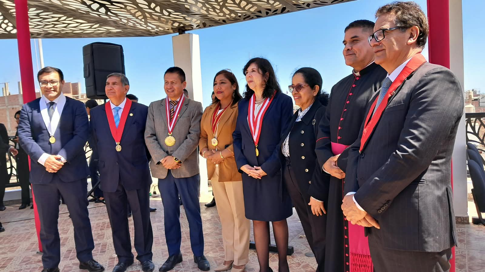

Cuerpo Académico
Cuerpo Académico
Plana Docente
Conoce a los catedráticos e ingenieros especialistas encargados de impartir las materias de la carrera en la EPIS.
Portal institucional de la EPIS. Explora los servicios académicos, plana docente e instalaciones de nuestra carrera.
Cuerpo Académico
Conoce a los catedráticos e ingenieros especialistas encargados de impartir las materias de la carrera en la EPIS.
 Infraestructura TI
Infraestructura TI
Infraestructura moderna, laboratorios de cómputo y ambientes equipados para las prácticas de nuestra facultad.

Atención al AlumnoOficinas directivas, trámites de matrícula, soporte académico y servicios para la comunidad estudiantil.
"Formar Ingenieros de Sistemas analíticos, éticos e innovadores, capaces de diseñar, implementar y gestionar soluciones tecnológicas complejas, optimizando procesos organizacionales y promoviendo el desarrollo científico-tecnológico en la región Cañete y el país."